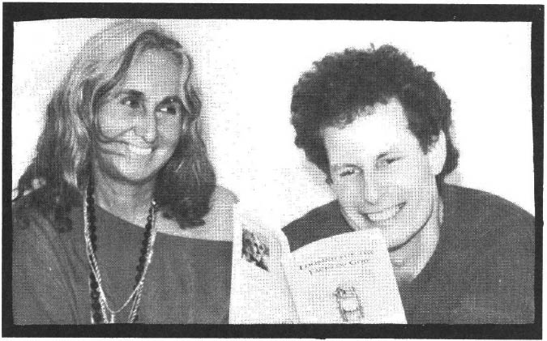
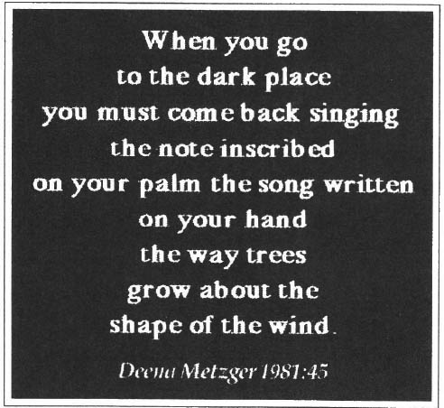
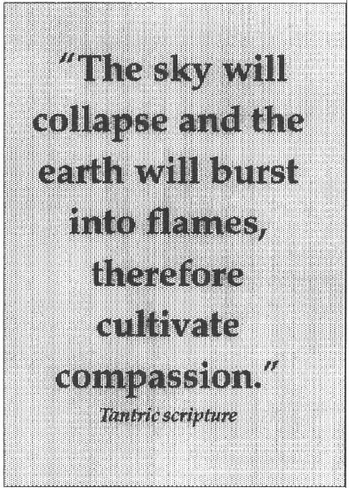

Apokalypsis: (from the Greek) literally "revelation" or "a tearing away of the veil, of that which conceals" (kalyptein)
Enantiodromia: The qualities or personas, carried to their extremes, tend to become their opposite.
Editorial preface: When Michael and I were setting up this interview, I mentioned the shocking similarity of the dreams Michael built his book, 'Dreaming the End of the World' around and those received on this end as a result of our call for visionary dreams -resulting in this year's theme, Dreaming Humanity's Path. Similarity sufficient to cause trembling! This phenomenon, for me, confirms the essential message/story Psyche is communicating to the human community in these times.
Roberta Ossana: Before we go into the heart of the crucial dreams and messages that you communicate in your book about them, will you share a little about yourself, your interest in dreams/especially dreams of apocalypse, and how the book came about?
Michael Ortiz Hill: My background and education have definitely not been traditional. My mother is an artist and Mexican; her family goes back 250 years in Santa Fe, New Mexico My father was a Buddhist/Jungian intellectual. They met in the artist community in Santa Fe back in the 40's... so, I grew up in a certain ferment around artistic and psychic concerns. The beginning of my education was in my father's library, for sure! I was raised Catholic and learned the Buddha Dharma from my father when I was 15.
My own practice has been largely Buddhist. When I was a teenager, I was homeless for three years and I regard that period as the real ground of my education: on one hand it was three years sleeping under freeway bridges, rummaging through garbage cans; on the other hand, I sat in on classes at the university, spending a great deal of time reading in university libraries. Carl Jung and Joseph Campbell were certainly my mentors. When I was homeless, a great deal of what I did was get an education. It was very deep, very rigorous and actually very devastating... as one can imagine. What I call the apocalyptic rite of passage was first enacted in my life when I was on the street.
I rather reconstructed myself when I was in my twenties. Got a job working with dying people and began to piece myself together. I trained as a registered nurse and entered into a quasi-monastic Buddhist practice for 6 1/2 years, sitting zazen at the bedside of my patients during graveyard shift. So my work now is what I call curandeeismo, a Spanish word meaning that I do healing, both in the context of the hospital and doing ritual work with my wife, Deena Metzger. Dreams play a big part in all of this. I work very strongly with dreams with my patients/clients, also with the Tarot and doing ritual work. My training the last three years has been in Ifa, which is West African (Yoruba) religious tradition. That's my life in a nutshell.

The dreams that I've collected for the book are about the end of the world, about apocalypse. Because I'm from New Mexico, originally and because of the circumstances of my background, I literally grew up under the shadow of the bomb. My father was born and raised at Alamogordo, which is where they blew up the first bomb... outside of town, there. And my mother's town, Santa Fe is very much in the shadow of Los Alamos.
My mother tells a remarkable story about when she was a teenager in the early forties, walking on the ridge near my grandfather's ranch with a nephew and pointing to the lights of Los Alamos—not having a clue what they were doing over there—and telling him that that was Santa Claus preparing Christmas for everybody!
So, I grew up within the mythology of the bomb, within the duck and cover generation. The terrors of the cold war were always an over-arching presence. I'm of a generation—the post Hiroshima generation—that truly did not believe we would live to be 20 years old. I grew up in an atmosphere that took apocalypse as a given.
Roberta: An extraordinary history, Michael. Thank you. It seems to me that the dreams and your narrative in the book, are re-telling or reframing the archetypal motifs of the Creation Story and Hero's Journey, in contemporary terms. Does this ring true for you?
Michael: That's a very good point because one of the startling things is, if you look at the roots of what is called apocalypse in Western culture... if you look, for instance, to the roots of the Gospel and the revelations of St. John about apocalypse in the Old Testament, you go back to the old Babylonian stories of Marduk and the slaying of the primordial dragon, Tiamat. An ordered Universe, the sky and the stars, comes from the body of the slain dragon.
So, the story of apocalypse, at its root, is really the story of creation...not the story of the end of the world. It's the story of the end of one world and the beginning of another. So, you're absolutely right about that.
Roberta: That's how this time seems, like an updating of the Creation story and being on the threshold of creation. Let's hope! It can't get too much more chaotic.
There are some quotes from your book that orchestrate these archetypal stories—and which also outline the three stages of the Hero's Journey—which I would like to frame this interview around, if I may:
DEPARTURE
"This dream—the (collective) Dream at the End of the World—is the awakening of the Beast." p.23
"The Beast is an autonomous complex loose in the collective psyche..." p.33
"The Beast is very often associated with the realm under the ground." p.25
"Very often the Beast's violence is located specifically in its hunger." p.25
Roberta: What are some alternative, constructive suggestions you might make... what can be done to satisfy the hunger of the beast?
Michael: There are two things that come to mind. One, I suppose has to do with my reflections on the beast the last few months. My wife and I have been talking about the vortex—our shorthand for this acceleration of time we're experiencing. Deena and I have been talking about this autonomous complex, this vortex, that we're drawn into and toward—where things just seem to speed up and speed up and speed up—and more and more is demanded of us and we try to keep pace with it and things literally start disintegrating around us. The feeling is that when you find all of your peers and most everything you see around you being drawn toward this acceleration, then there is more going on than a personal situation.
When I was his student years ago, Llama Sogyul Rimpoche used to talk about the Kali Yuga. Kali, is of course, the devouring mother from Tibetan and North Indian mythology. The Kali Yuga being the apocalyptic age, he used to speak of it in terms of a time of things accelerating and therefore disintegrating. So, in terms of the hunger of the Beast, there is way in which we are feeding our lives, our very selves, to this particular vortex. Lately, I've been struggling to re-imagine the vortex as a relentless demand to seize the present moment, carpe diem, to serve the sacredness of what is immediately present.
The other thing about feeding the Beast is that the passage through apocalypse is hopefully a passage to a much smaller and humbler way of seeing things. There's a big attraction to thinking apocalyptically...in enormous categories. There's a shift, it seems to me, between the Beast (with a capital B) and the animals. There's the little kangaroo rat that you see the track of in the desert. That's the shift to me, in terms of archetypically feeding the Beast. How do you "feed"—that is to say acknowledge and nurture—the world it lives in? The real question is, What is the Transition We Have to Make? so that we're weaned from these heroic, titanic battles between Messiah and Beast and come back to seeing the little particulars that surround us.
INITIATION
Roberta: So when we're talking about an autonomous complex loose in the collective psyche and how we might satisfy the Beast's hunger...it seems to boil down to the individual and to a recognition of shadow, leading to the rite of passage or the Initiatory stage of the Journey. More quotes from your book:
"The Messiah, crazy in his desire to eliminate the enemy, easily becomes the Beast." p. 31
"In this dream, (at the end of the world) Beast and Messiah co-habit the same image." p. 42
"It is in coming to terms with the reality of the Beast that our salvation lies." p. 44
"Sub-scending the madness of the 20th century means descending into the Underworld to be initiated there." p. 45
"The dream of apocalypse depends on descending into the Beast's lair with tenderness of heart..." p. 44
"Rather than enacting apocalypse in the world unconsciously, we deliberately enter the apocalypse of the psyche for the sake of the world." p.53
"We are far more likely to participate in the world's destruction by clinging to the fiction of our innocence than if we have a conscious and living relationship with the darker aspects of our own nature." p. 53
"...apocalyptic initiation may well require destruction; one's 'world falling apart' can be intrinsic to the way of transformation." p. 85
"The recognition of apocalypse begins with looking into the face of what is falling apart and finding it unbearable..." p. 85
"...the project of preserving the fiction of normality in an apocalyptic time is itself the opium of the masses." p. 85
"These dreams speak of the end of denial, both of what is going on and of our complicity in it." p. 99
Roberta: In these quotes, Beast and the Jungian concept of Shadow—or that which is not yet conscious—are relative, almost synonymous, are they not?
Michael: Yes, I think so, although when I speak of the Beast I'm talking about Shadow in a collective way... though obviously it's very personal, very intimately personal. When we speak of what we don't even want to know about ourselves, that's about as intimate as you can get.
Roberta: If Shadow has become a collective, autonomous complex, how do we each begin to do the work of withdrawing (shadow) projections? Of befriending the Beast?
Michael: There's an initiation in looking the Beast in the eye and our transformation is literally in the arms of the Beast, so to speak. There's a recognition of the sacred here. What happens in the apocalyptic battle is that there's a raging between the Messiah and the Beast that feeds this energy and that is precisely what we have to withdraw from. It's not about fighting the Beast, it's about recognizing: Ah...I See! It's not the enemy "out there" that's trying to destroy the world. I myself am also participating.
Roberta: Therein lies the paradox and the beauty in comprehending these realities. While the Beast is becoming visible—e.g. while we have collectively projected our shadow-side out into the world via wholesaling/marketing violence, via—as you speak about so eloquently in your book—the ravages that we're visiting upon Nature...the Beast has become so BIG! Yet each of us can only do our part, our own work. Can you, having been through the rites of passage many times yourself, offer courage and encouragement to people who have yet to make that passage?
Michael: Courage is a wonderful word, I think, because—as I understand the root of the word—courage is about coure, heart. How do we have heart?
Somebody was asking me what apocalypse actually was, psychologically and as I got to the core of it, I believe it's the image of heartbreak. I think our terrors of apocalypse are terrors of heartbreak, of things falling apart. Psychological apocalypse is the experience of the lament or the rage or the compassion of living in the world at this time. And it is heart breaking, it is terrifying in many respects. That part of it can't be diminished, can't be pretended away.
One classicist I quote in the book, L. R. Farnell, says that the quality that Hades holds—Hades being the God at the bottom of the underworld—in his primordial self is tenderness and melancholy.
My own experience in making this passage—for all the drama of going down, which can indeed be very excruciating at times—the bottom line of the experience is this quality of tenderness and melancholy. I work a great deal around the Greek myth of Hades and the Eleusinian mysteries and I always ask, "What will it require to change the hell of the Twentieth Century into a Hades of initiation, rather than look at this time as a period or place of damnation? What if we look at the particulars of living in this time as a rite of initiation?"
Initiation always serves the life energy and the life energy is the vitality within us and that is reliable. To move in that direction, to recover a portion of one's vitality, is a profound act.
Unfortunately, American culture is a fundamentalist culture in many respects. It proliferates fundamentalisms and about 80% of what passes as ethics in this country is about identifying an enemy and throwing one's life force into fighting it! It's better than not being ethically committed, I suppose but there's very little imaginative space for what might be an ethics of reconciliation. When I work on the dream level, the question is, "How does one apply an ethics of reconciliation? How does one reconcile oneself with these aspects that are hugely troublesome, disruptive and confusing?" One can rely on the ego psychology that fights them to the bitter end but we all know that, in itself, drives us crazy.

RETURN
"These dreams show that the Beast may well be presenting to us one of the many faces of God." p. 145
"One cannot behold the birth of light out of darkness without having been first rendered naked." p.131
"The light is revealed when one no longer knows who one is—when one is a mystery to oneself." p. 131
"The compassionate one is the archetype at the core of religion itself, in the original sense of the word: religiare, in Latin, 're-binding'." p. 132
"In two of these dreams, the act of re-binding is storytelling." p. 133
"The compassionate one is born the moment that self-preservation is no longer one's reason for being." p. 131
Therefore, Cultivate Compassion! Title, chapter 13
Roberta: Here, in the midst of apocalypse—as we approach the threshold of the new forms/the new creation story—how do we dream, Now, the beginning of the world?
Michael: I'm going to answer on two tracks here, one which may seem a bit elliptical. One thing I noticed in apocalyptic dreams of the Compassionate One is that he or she only appears after the apocalypse. It's fascinating! The Compassionate One in apocalyptic dreams is not the one who saves the world. The one who saves the world has a very different character. Before apocalypse, there's a trickster character, who is like an animal that will do anything to survive. One who is trying, in trickster fashion, to sabotage the machinery that would generate apocalypse. So this is one figure in the psyche, the one who will save the world.
The Compassionate One comes after the world has been rendered to ash. I speak of that act of binding together, of storytelling. One woman dreamt of the feet of the wounded children while she led them out of the devastation to a greener world. There's a difference here between the view of before the apocalypse and after the apocalypse. Before and after the apocalypse are two different ways of speaking about where we're at now; two different windows in which to look at the present time. So, we're asked to carry a duplex sensibility, two contradictory images of where we're at now, two contradictory forms of activity.
Again, we have to come to the willingness to let our hearts break. To let the simple shape of the human being emerge: uninflated, tender and with an acceptance of the limitations of being human, with all our flaws. Striving for perfection is...it's simply a distraction. We're not perfectible beings and our beauty is not in our perfectibility. I believe that heartbreak and the willingness to live lives that have a human shape, lives that are responsible is the way we wake up from the dream at the end of the world.
Because the bomb is no longer the primary image, there is an archetypal shift in the apocalyptic psyche. Now we're imaging apocalypse as the unraveling of nature—which of course was happening all along—the bomb was just eclipsing it. Greek myth talks about the Furies, the ones who torment, harass and cause miasma—bad blood or poison blood—to those who violate the Earth, the Mother.
My feeling is that we're moving into a more horizontal mode. We're not looking up to the sky, to the bomb coming down anymore. We are beginning to recognize that our human lives are being shaped by the presence of other beings that are not human. They surround us, they shape us. How do we live in a way that honors that humans exist within a mosaic of communities? It is said that between 30 and 50 million species live on this planet, each of which is a community in and of itself. So, one can enter into that reality—this thin film of life called the biosphere that envelopes this planet and that vibrates as we walk in the midst of it. It has always beckoned to our hearts to listen. Right now, nothing is more crucial than learning the art of listening.
Roberta: Oh, thank you for sharing your thoughts and your time, Michael.
The Oceans Above, The Sky Below: A Dream
I have been to a huge party in some kind of military compound, or military headquarters—either Air Force or NASA—and one of the officers wants to show me something. I sensed that this man was not only lonely but also alone, in that he knew something that nobody else knew. Some sort of secret mission. He wanted to show me what it was.
He takes me into a room that has what looks like an aircraft trainer in it, with seats for a pilot and passenger. He straps me into the passenger seat, makes sure I have a helmet securely strapped on, shows me how to "sight" in something like a rifle sight. (What am I going to be "sighting?") then he gets up into the pilot's seat, presses a button on the stick and we're immediately catapulted into outer space! It happens so fast that it fairly takes my breath away. We hover there for a few minutes, then we're suddenly back in the training room. He mentally tells me to go get something (what?) and come back to do this again. I wander through the halls but don't know which door to go into to get whatever it is I'm supposed to get. Finally, I go into a room full of officers who are just standing around and talking. I ask the one who seems to outrank the others where is this Colonel that I'm supposed to assist. He looks at me with disdain. The others turn around to stare at me as though they thought "Who do you think you are, to be assisting Colonel what's-his-name in such a secret project?" The officer studies me for a minute and then says "Oh, yes, you must be Maria" indicating that he knows this Colonel has need of me. He leads me through the hall toward the training room.
I say, "Yes, we lifted off a while ago and I must admit I was scared pea-green at first but then I began to enjoy it." He smirks and says: "Yes, I guess there are some people who enjoy doing something different." I wonder what he means by this. Suddenly, before we get to the training room, I see we are in this huge room. It is round, like a transparent bubble. There are windows all around, from floor to domed ceiling and the ceiling is also transparent, like a domed skylight. There is something like a ballet bar against the right side of the wall. Suddenly, the entire bubble-room tilts sharply to the right and everything and everybody starts sliding and falling against the opposite wall. Some of them are yelling, all wondering what in the world is going on.
The officer who was leading me is the most nonplused by it all. I say to him: "Well, there's something different going on right now and we're all experiencing it." I'm frightened, wondering what it is and what all these people think about it and what's going to happen to Planet Earth. Suddenly, in a flash, I know that the Earth's poles are shifting and what was "up" is now going "down" and vice-versa. It's like the oceans will be above and the sky will be below...a complete REVERSAL of what once was and it would probably mean the extinction of life as we now know it. Not "life" per se but "life as we now know it."